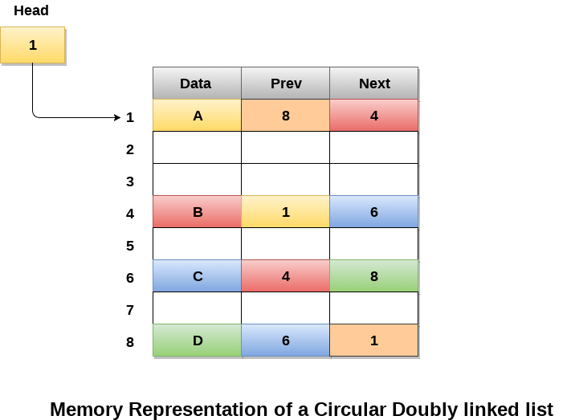

Circular Doubly Linked List
Circular doubly linked list is a more complexed type of data structure in which a node contain pointers to its previous node as well as the next node. Circular doubly linked list doesn't contain NULL in any of the node. The last node of the list contains the address of the first node of the list. The first node of the list also contain address of the last node in its previous pointer.
A circular doubly linked list is shown in the following figure

Due to the fact that a circular doubly linked list contains three parts in its structure therefore, it demands more space per node and more expensive basic operations. However, a circular doubly linked list provides easy manipulation of the pointers and the searching becomes twice as efficient.
Memory Management of Circular Doubly linked list
The following figure shows the way in which the memory is allocated for a circular doubly linked list. The variable head contains the address of the first element of the list i.e. 1 hence the starting node of the list contains data A is stored at address 1. Since, each node of the list is supposed to have three parts therefore, the starting node of the list contains address of the last node i.e. 8 and the next node i.e. 4. The last node of the list that is stored at address 8 and containing data as 6, contains address of the first node of the list as shown in the image i.e. 1. In circular doubly linked list, the last node is identified by the address of the first node which is stored in the next part of the last node therefore the node which contains the address of the first node, is actually the last node of the list.
